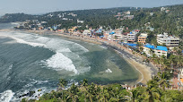
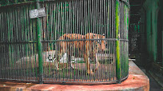

Thiruvananthapuram
Main Attractions
Sree Padmanabha Swami Temple
It was during the time of King Marthanda Varma that this temple saw a major renovation. What we see today is the result of the meticulous renovation work on the ancient temple. The devout King Marthanda Varma took it upon himself and the royal family to look after the temple and the people of the state/kingdom. This was followed by the tradition of Thripadidanam, the donation to the temple and its deity. The last Maharaja of Travancore Maharaja Sree Padmanabha Dasa Sree Chithira Thirunal Bala Rama Varma, in 1965, formed the Sree Padmanabha Swamy Temple Trust to continue religious offerings and donations.
കേരള സംസ്ഥാനത്തിന്റെ തലസ്ഥാനമായ തിരുവനന്തപുരം നഗരത്തിലെ പ്രസിദ്ധമായ മഹാവിഷ്ണുക്ഷേത്രമാണ് ശ്രീപത്മനാഭസ്വാമി ക്ഷേത്രം. അനന്തൻ (ആദിശേഷൻ) എന്ന നാഗത്തിന്റെ പുറത്ത് ലക്ഷ്മിദേവിയോടൊപ്പം ശയിക്കുന്ന മഹാവിഷ്ണുവാണ് ഏറ്റവും പ്രധാന പ്രതിഷ്ഠ. പത്മനാഭസ്വാമിയെക്കൂടാതെ ഉഗ്രമൂർത്തിയായ തെക്കെടത്ത് നരസിംഹമൂർത്തി, തിരുവമ്പാടി ശ്രീകൃഷ്ണസ്വാമി എന്നിവർക്കും തുല്യപ്രാധാന്യത്തോടെ പ്രതിഷ്ഠകളുണ്ട്. കൂടാതെ,.[1] ക്ഷേത്രത്തിന് ചുറ്റുമുള്ള കോട്ടമതിലിന്റെ കിഴക്കേകോട്ടയുടെ വാതിലിന് അഭിമുഖമായാണ് ക്ഷേത്രത്തിന്റെ പ്രധാന ഗോപുരം സ്ഥിതി ചെയ്യുന്നത്.
Kovalam Beach

The history and culture of this place are rooted in countryside that captivates large number of tourists to sightsee and revel in its mystical charm. The staggering blue waters of the Arabian Sea and the rocky headlands, makes this beautiful beach paradise. Honeymoon couples and beach lovers extremely love this beach as it offers romantic moments all along with plenty of activities for adventure and fun. You can feel the pleasure of boat sail with your loved ones and discover the popular sights all around the beach.
Thiruvananthapuram, the capital city of Kerala, is just 16 km away from Kovalam and getting there is no hassle. But if you are on holiday it is better to stay in Kovalam and visit the city. The city of Thiruvananthapuram has many interesting places to see like the Napier Museum, the Sri Chitra Art Gallery and the Padmanabhaswamy Temple. The SMSM Institute, a State owned handicrafts emporium, is the ideal place to pick up ethnic curios and other articles.
Thiruvananthapuram Zoo

Thiruvananthapuram Zoo is one of the oldest zoos in India. Similarly the Museum and Botanical Gardens are also one of the oldest of their kind in the country. Swathi Thirunal Rama Varma (1816–1846), the ruler of Travancore during 1830–1846, was the visionary behind the establishment of the Thiruvananthapuram Museum and Zoo. He had a broad variety of animals, including elephants in his horse breeding centre. In the Trivandrum, stables he incorporated a menagerie and kept tigers, panthers cheetahs, deer, bears and a lioness there. It was however left to his brother Uthram Thirunal Marthanda Varma and the then British Resident General Cullen which resulted in the establishment of Napier Museum and Zoo in Thiruvananthapuram.
കേരളത്തിലെ ഏറ്റവും വലിയ മൃഗശാലയാണ് തിരുവനന്തപുരത്ത് പ്രവർത്തിക്കുന്ന മൃഗശാല. 1857-ലാണ് തിരുവനന്തപുരം മൃഗശാല സ്ഥാപിക്കപ്പെട്ടത്[1]. പക്ഷിമൃഗാദികളെ അതിന്റെ സ്വാഭാവിക ചുറ്റുപാടിൽ സംരക്ഷിച്ചിരിക്കുന്നതിനാൽ അവയുടെ ജീവിതരീതികളെക്കുറിച്ച് മനസ്സിലാക്കാൻ സന്ദർശകർക്ക് അവസരം ലഭിക്കുന്നു. തിരുവനന്തപുരം റയിൽവേ സ്റ്റേഷനിൽ നിന്നും കെ.എസ്.ആർ.ടി.സി. ബസ്റ്റാന്റിൽ നിന്നും ഏകദേശം നാല് കിലോമീറ്റർ അകലെയാണ് മൃഗശാല സ്ഥിതി ചെയ്യുന്നത്. ഇതേ വളപ്പിൽ തന്നെ സ്ഥിതി ചെയ്യുന്ന അലങ്കാരമത്സ്യ പ്രദർശനകേന്ദ്രവും ചരിത്ര മ്യൂസിയവും സന്ദർശകരെ ആകർഷിക്കുന്നു.